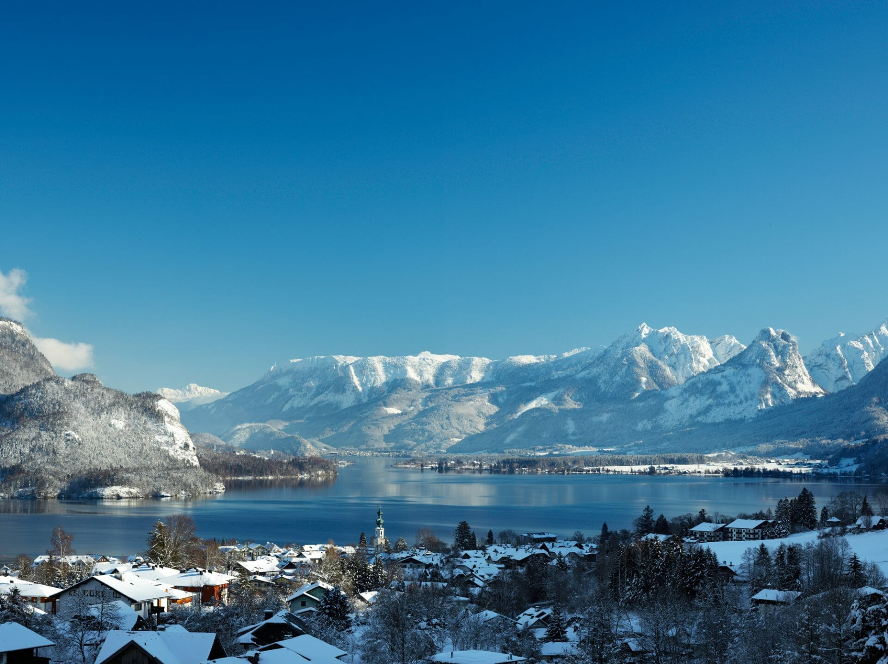

Wolfgangsee
Fläche: ca. 2,6 km²
Details: Einer der bekanntesten Seen in Salzburg, eingebettet zwischen
den Orten St. Gilgen, St. Wolfgang und Strobl. Sehr beliebt bei Wanderern, Radfahrern und Schwimmern.
Der Wolfgangsee ist ein malerischer Alpensee im Salzkammergut,
der sich über die Bundesländer Salzburg und Oberösterreich erstreckt.
Mit einer Fläche von etwa 13 km² und einer maximalen Tiefe von 114 Metern
zählt er zu den größten und tiefsten Seen der Region. Umrahmt von den beeindruckenden
Salzkammergut-Bergen, darunter der Schafberg mit 1.783 Metern Höhe, bietet
der See eine Vielzahl von Freizeitmöglichkeiten.
Strandbäder und Badeplätze am Wolfgangsee
- Badewiese Sonnplatz: Direkt an der Mondseestraße in St. Gilgen gelegen, bietet dieser Platz eine ruhige Wiese zum Sonnenbaden sowie einen Steg, der ins Wasser führt.
- Naturbadestrand Bacheck-Abersee: In St. Gilgen, an der Mündung des Zinkenbachs, befindet sich dieser naturbelassene Strand. Bitte beachten Sie, dass hier keine sanitären Anlagen vorhanden sind und Hunde nicht erlaubt sind.
- Waldbad Fürberg: Dieses Waldbad in St. Gilgen bietet eine atemberaubende Aussicht auf den See und die umliegenden Berge. Es gibt einen kleinen Kiosk, und Hunde sind an der Leine erlaubt. Der Eintritt ist für Erwachsene kostenpflichtig; Kinder bis 8 Jahre haben freien Zugang.
- Badeplatz Franzosenschanze: Beliebt bei Tauchern, bietet dieser Platz schattige Bereiche zum Sitzen und Liegen. Der Zugang zum Wasser erfolgt über eine steile Treppe; die Steine können rutschig sein. Hunde sind hier erlaubt.
- Badeplatz Information Ried: Ein gepflegter Badeplatz mit freier Liegewiese in der Ortschaft Ried.
- Naturstrand Wasswiese: In Strobl gelegen, bietet dieser Platz eine Liegewiese unter Bäumen, einen Badesteg, einen Spielplatz, ein Buffet und Bootsvermietung.
- Strandbad St. Gilgen: Eine weitläufige Grünanlage mit Umkleidekabinen, einem Badebereich für Kinder und einem Restaurant.
